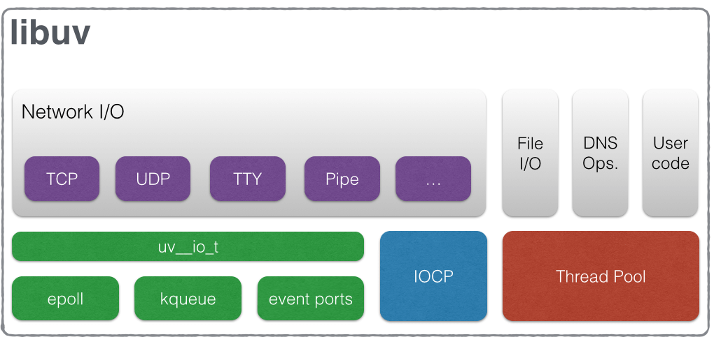

前置知识
→ Web服务、ASGI ←
→ 异步非阻塞及事件驱动 ←
→ I/O多路复用 ←
Uvicorn
The lightning-fast ASGI server.
基于 uvloop 和 httptools 的 ASGI 实现。
什么是 uvloop？
- 是一个高性能的异步非阻塞框架
- 是完整的 asyncio 事件循环的替代品
- 建立在 libuv 之上
- libuv 是一个高性能的，事件驱动的 I/O 库，并且提供了跨平台（如windows, linux）的 API
- 由 Cython 编写
什么是 libuv？
libuv 架构图 ↓

- libuv 提供了不同的接口来操作网络 I/O、文件 I/O、DNS 相关函数以及用户代码
- 网络 I/O 的处理，在不同平台下使用不同的异步模型
- Linux – epoll
- OSX & BSDs – kqueue
- Windows – IOCP
- SunOS – event ports
- 文件 I/O、DNS 函数及用户代码处理不依赖平台，直接使用线程池处理
- 代码由 C 语言实现
什么是 httptools？
- 是 NodeJS HTTP 解析的 Python 实现
- 由 Cython 编写
小结
号称”最强“的 Uvicorn，是一个基于事件的非阻塞框架，代码由 Cython 实现，对比 Daphne 的 Twisted（Python 实现） 事件驱动，理论上来说，速度确实是在 Daphone 之上的，Cython + 非阻塞 + 事件循环的组合，目前来看，确实是一个最强组合。
总结
「我愿称你为最强」
参考链接
IO多路复用原理剖析
Linux理解-一切皆文件

![微信分享二维码]()